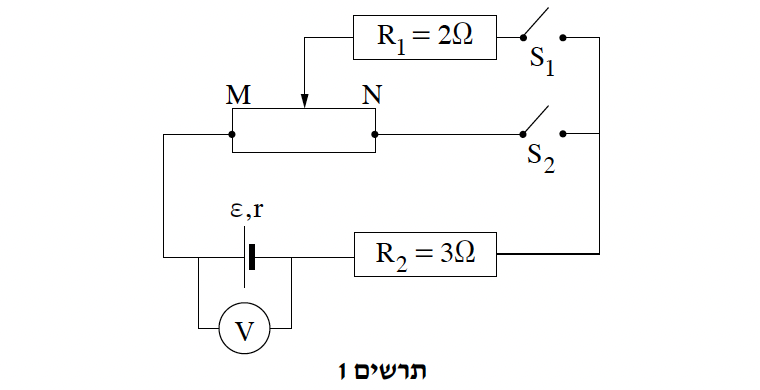
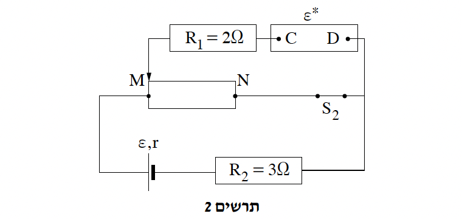

שאלה 2
בתרשים 1 שלפניכם מתואר מעגל חשמלי ובו מקור מתח שהכא"מ שלו ε = 6V והתנגדותו הפנימית r = 1Ω, נגד משתנה MN שהתנגדותו המרבית 12Ω, נגדים קבועים R1 = 2Ω ו-R2 = 3Ω, שני מפסקים S1 ו-S2, וולטמטר אידיאלי ותילים מוליכים אידיאליים.

סוגרים את מפסק S1 (מפסק S2 נשאר פתוח), ומציבים את הגררה של הנגד המשתנה בקצה N.
חשבו את המתח בין קצות המפסק S2. (7 נקודות)
מזיזים את הגררה מקצה N לקצה M.
האם במהלך הזזת הגררה הוריית הוולטמטר גדלה, קטנה או אינה משתנה? נמקו את תשובתכם. (6 נקודות)
פותחים את מפסק S1, סוגרים את מפסק S2, ומחזירים את הגררה לנקודה N.
מהו המתח בין קצות המפסק S1? נמקו את תשובתכם. (5 נקודות)
מזיזים את הגררה מקצה N לקצה M.
האם במהלך הזזת הגררה הוריית הוולטמטר גדלה, קטנה או אינה משתנה? נמקו את תשובתכם. (5 נקודות)
לבסוף מחליפים את מפסק S1 במקור מתח אידיאלי שהכא"מ שלו ε*, ומשאירים את מפסק S2 סגור ואת הגררה בנקודה M (ראו תרשים 2).

נתון כי לא זורם זרם בנגד המשתנה (VMN = 0).
האם ההדק החיובי של מקור המתח שהכא"מ שלו ε* חובר לנקודה C או לנקודה D? נמקו את תשובתכם. (4 1/3 נקודות)
חשבו את ε*. (6 נקודות)